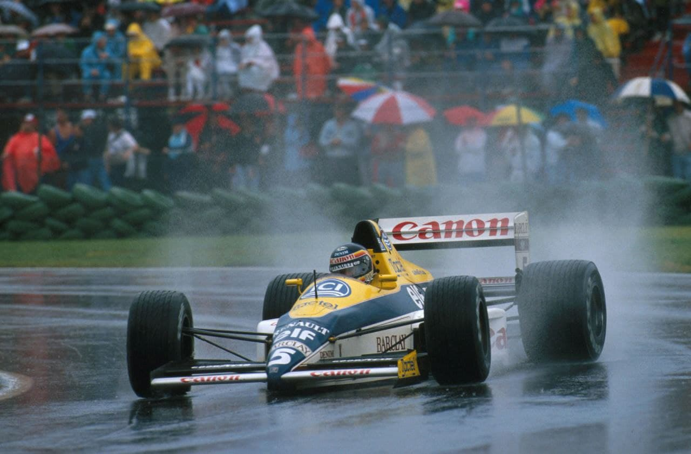
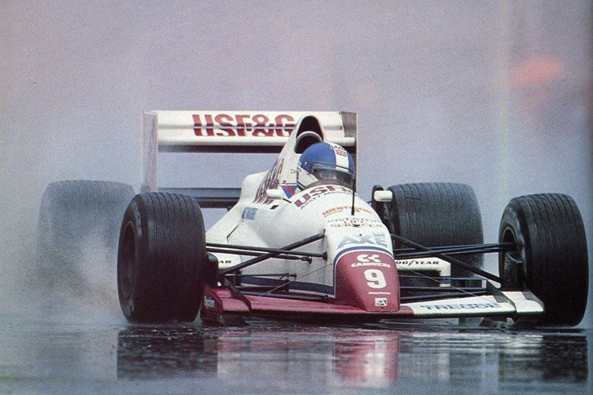
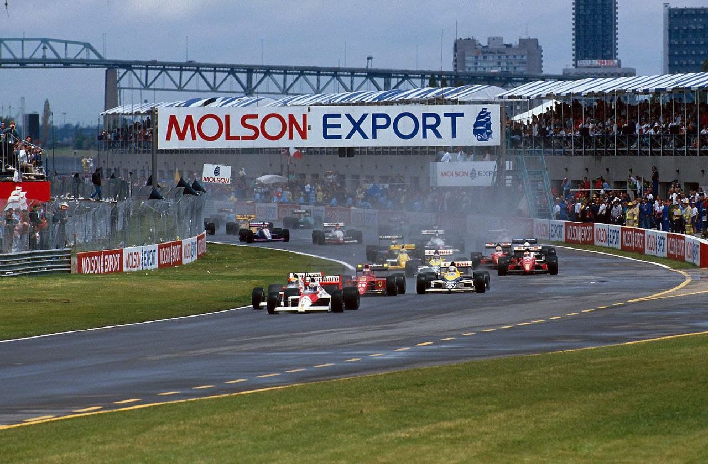
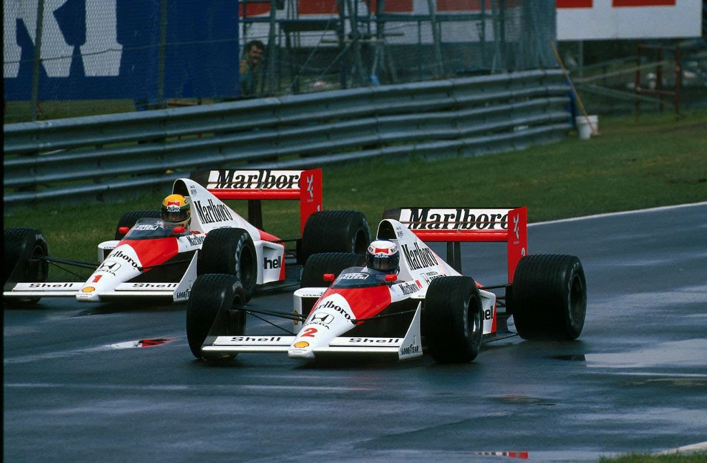
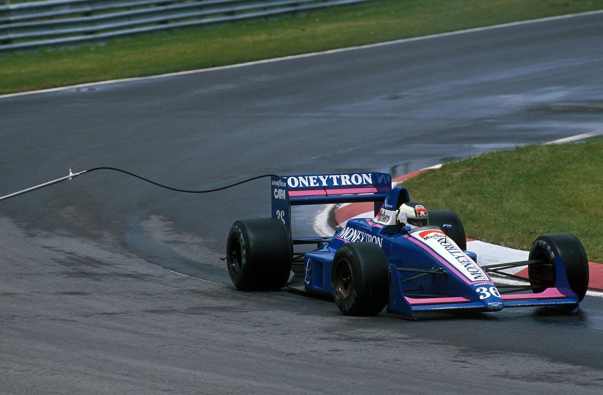
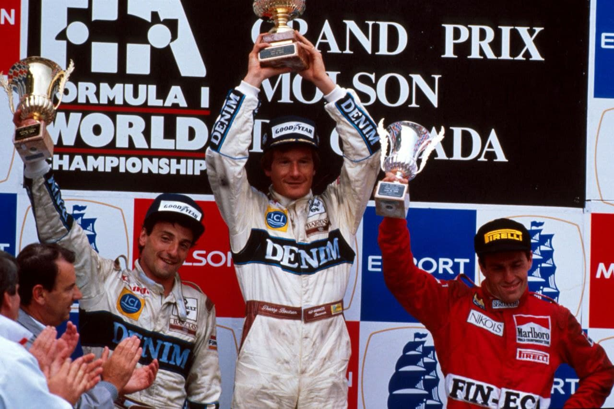

O REI DA CHUVA E BOUTSEN

Ayrton voltou a confirmar-se o rei da chuva, mas dominou meia corrida e não ganhou. Pódio-surpresa, com dobradinha da Williams, e De Cesaris. Piquet pontua, finalmente. Moreno e Gugelmin abandonam.
por Francisco Santos
A chuva voltou a marcar encontro com o GP do Canadá, e quando parecia assegurada a vitória de Ayrton Senna, o motor quebrou e o brasileiro viu se obrigado a abandonar. Faltavam apenas três voltas para o final da corrida e Senna dispunha de mais de vinte segundos de vantagem sobre o seu mais direto perseguidor, resultando daqui uma inesperada dupla dos Williams-Renault, com Boutsen a aproveitar alguns problemas no carro de Patrese (carroçaria inferior se soltando e afetando a estabilidade) para se impôr.
Na história da pista da Ilha de Notre-Dame, hoje dedicada à memória de Gilles Villeneuve, várias edições contaram com a presença da chuva, e foi precisamente numa delas que o piloto canadense construiu uma página importante de uma carreira que, embora curta, se tornou quase lendária. Foi em 1981, quando realizou uma parte da corrida, disputada numa pista completamente alagada, com o bico da Ferrari quebrado roubando-lhe a maior parte da visão.
É verdade que os Williams-Renault estiveram no comando mais de meia corrida, sobretudo com Patrese, por isso a vitória de Boutsen, que liderou apenas as últimas três voltas, não fez esquecer, quer a excelente corrida do italiano até à troca de pneus, quer o domínio de Senna a partir da curta e inesperada liderança de Warwick. O primeiro sucesso de Boutsen, que teria ficado melhor a Patrese pelo que fez na primeira metade da prova, correspondeu a volta da Williams e da Renault à vitória, demonstrando de novo que os McLaren-Honda não são imbatíveis. Mas derivou de circunstâncias felizes, tanto mais que o belga teve a sorte de não bater em nada e poder prosseguir quase sem perder tempo ao rodar na saída da chicane que precede a reta de chegada.

Os treinos
A exemplo do que vinha acontecendo desde o início do ano, foi um dos pilotos dos Brabham-Judd que realizou o melhor tempo na pré-qualificação, mas se Modena foi o mais rápido, Brundle não foi além de quinto e ficou de fora dos treinos oficiais, o que aconteceu pela primeira vez com um dos Brabham. Isso deveu-se a problemas de freios o ao motor quebrado no seu carro, o que obrigou a recorrer ao reserva, preparado para Modena. Apurados também Larini, Johansson e Caffi, pilotos habitualmente dos mais rápidos da pré-qualificação, que ficaram com pequenas diferenças entre si, mas a mais de um segundo de Modena. Com o novo Coloni, chegado apenas na véspera e acabado nos "boxes", Raphanel deu apenas uma volta lançada; por isso fez o último tempo. Moreno teria melhor sorte! Prost alcançou a sua primeira "pole" da temporada, interrompendo assim a sério recorde de Senna. Foi nos primeiros vinte minutos da primeira sessão de qualificação que tudo ficou decidido a favor de Prost, que bateu o brasileiro pela primeira vez (em 1989) num treino de qualificação, e depois de nada valeu a Senna mostrar-se cerca de um segundo mais rápido do que Prost no treino de sábado, uma vez que o vento tinha sujado a pista e desequilibrava os carros nas curvas mais rápidas. Por isso não houve alterações nas primeiras 23 posições do grid, ficando Prost e Senna na primeira fila. Foi Patrese quem mais se aproximou dos dois McLaren-Honda, mas tanto ele como Berger ficaram a cerca de um segundo dos homens da frente, seguidos de perto por Mansell e Boutsen, o que representava, afinal, a diferença habitual entre os McLaren-Honda o os seus principais adversários, os Williams-Renault e Ferrari. O último lugar do grid pertencia a Moreno, o que era algo inesperado pelo fato do Coloni não ter sequer andado antes dos treinos do Canadá, e Moreno não estar entre os qualificados na sexta-feira. Conseguiu um lugar no grid, portanto, na sessão de treinos mais lenta, e no "Warm-up" alcançou um surpreendente quinto lugar, entre Senna e Piquet!

A CORRIDA
Na hora da largada, a pista estava molhada, mas com tendência para secar. Mesmo assim, a maioria dos pilotos optou por pneus de chuva, pois Mansell, Nannini e Sala foram os únicos que decidiram montar "slicks" após a volta de aquecimento e formação do grid, o que viria a valer a desclassificação dos dois primeiros, por terem arrancado dos "boxes" antes da largada... Isso aconteceu por terem encontrado o semáforo de saída dos "boxes” no amarelo intermitente, o que constituiu falha da organização, mas não evitou a bandeira preta logo após a largada. Prost largou bem e colocou-se no comando, mas Senna ultrapassou logo no início da segunda volta. No entanto, como ambos decidiram trocar de pneus, foi Patrese que ficou em primeiro, sendo um dos pilotos a utilizar pneus de chuva ao longo de toda a corrida. Entretanto, verificava-se o abandono de Prost, com um apoio da suspensão da frente partido, devido a defeitos de construção do chassis... E Berger ficava também pelo caminho após breve passagem pelo segundo lugar, em consequência de mais uma avaria no alternador, que deixou o câmbio sem comando. Com pneus de chuva, Patrese perdia terreno para Senna quando a pista secava, mas afastava-se de novo quando a chuva voltava a cair. Porém, cumpridas vinte voltas, a chuva apareceu com força, permitindo que Patrese ganhasse vinte segundos de vantagem sobre Warwick e cerca de quarenta sobre Senna, que entretanto teve que fazer segunda troca de pneus.

Um verdadeiro fosso separava os seis primeiros dos seguintes, que eram os mais rápidos entre os pilotos com motores de 8 cilindros e pneus Pirelli: Modena, Caffi e De Ccsaris, com Martini separado destes apenas por Alliot. Gugelmin e Piquet não conseguiram lugar na primeira metade do grid, ficando Gugelmin na nona fila, depois de ter batido Capelli, seu companheiro de equipe, por mais de meio segundo, e Piquet na décima, ao lado de Alboroto, portanto bem acompanhado...
O domínio de Patrese manteve-se até meio da corrida, altura em que montou segundo jogo do pneus de chuva e caiu para terceiro. Quase em simultâneo, Boutsen deu a tal rodada em que quase não perdeu tempo. A parada de Patrese deixou a liderança para Warwick, mas apenas por cinco voltas. Desalojado da liderança por Senna, Warwick abandonou pouco depois com o motor quebrado, o que deixou Senna francamente isolado em primeiro, com mais de 20 segundos de vantagem sobre Patrese. E este não estava em condições de atacar Senna, nem mesmo de resistir à recuperação entretanto conseguida por Boutsen, que veio a subir para o segundo lugar que representaria, afinal, meio caminho para a vitória... O resto do caminho percorreu-o Boutsen após o abandono de Senna com o motor quebrado, e foi bastante curto...apenas três voltas!

A acompanhar Boutsen e Patrese ao pódio foi De Cesaris, que, juntamente com Caffi, seu companheiro na Dallara, manteve os pneus "slicks” durante muito tempo, mesmo quando a pista estava bastante molhada, dando um autêntico festival ao conseguirem acompanhar pilotos calçados com pneus de chuva. Nelson Piquet foi quarto e conseguiu pontuar, finalmente, valendo-se da sua experiência para evitar as armadilhas de uma pista muito difícil, nas quais caíram outros menos experientes. Mérito semelhante teve Arnoux, que se classificou logo a seguir. Maurício Gugelmin abandonou bastante cedo, logo na 12ª volta, com avaria elétrica, e Roberto Moreno quase conseguiu terminar a corrida de estréia do novo Coloni, mas era apenas nono e último quando lhe saltou uma roda da frente, mal apertada em um troca de pneus. Moreno fez então quase uma volta ao circuito em três rodas, mas viu-se obrigado a abandonar a cinco voltas do final da corrida, com o câmbio quebrado (problema de uma simples arruela).

O FIM DE SEMANA
MANSELL E NANNINI EXCLUÍDOS
No seguimento de uma confusão de troca de pneus, no final da volta de formação do grid, Nigel Mansell e Alessandra Nannini foram excluídos da prova. Estes dois pilotos e Luis Perez-Sala decidiram na volta de formação do grid trocar para pneus "sllck"*". Vieram ao box, cuja saída já devia estar fechada (Art 114 do Regulamento esportivo) pois já passavam dos 15 minutos antecedentes à largada. Segundo o mesmo artigo, os carros teriam de largar dos boxes, depois de todos os carros do grid terem passado a zona de saída dos boxes, e apenas depois de feito sinal por comissários de pista. A regulamentação também estipula, em outros artigos sobre o procedimento de saída dos boxes, que durante os treinos haverá um semáforo verde e vermelho à sua saída, sendo permitida a saída de carros apenas com a luz verde. Durante uma corrida, a saída dos boxes será responsabilidade única dos pilotos, que no entanto terão luzes amarelas intermitentes avisando-os da passagem de outros carros na pista junto à zona de saída. Quando Mansell e Nannini trocaram de pneus, a luz do final dos boxes era amarela intermitente, pelo que eles naturalmente pensaram que a corrida já havia começado, e saíram para a pista, já que também segundo parece nenhum comissário de pisla lhes terá feito qualquer sinal. Sala, que também parara para trocar de pneus, atrasou-se um pouco mais e chegou à saída dos boxes quando os primeiros carros já haviam largado do grid e passavam de frente do sinal do "pit lane", por isso parou, e entrou na pista só depois do último carro passar, como manda o regulamento, enquanto Mansell e Nannini circulavam na pista a caminho do grid, mas já sob bandeiras pretas.
RENAULT EXCLUSIVO WILLIAMS EM 1990
Patrick Faure, Presidente da Renault Sports, anunciou em Montreal que continuará a fornecer os seus motores em regime de exclusividade em 1990.
13ª DOBRADINHA
Com este resultado, a Williams somou 13 dobradinhas em toda a sua historia, contra 30 da Ferrari, 21 da McLaren e 8 da Lotus, Brabham e Tyrrell, num tolal de 108 ocasiões em que a mesma marca se classificou nos dois primeiros lugares em GPs. No entanto, para a Renault foi apenas a 2ª* vez que os seus motores conseguiram o 1-2, tendo sido a primeira no GP de França de 1982, com os seus próprios carros e com o motor turbo (Arnoux e Prost).
BOUTSEN: O INTRUSO VITORIOSO
Com esta sua primeira vitória, o belga Thierry Boutsen é o primeiro piloto desde que Gerhard Gerger ganhou no México, em outubro de 1986, a vencer o seu primeiro GP. Com isto, ele acabou com a série de vitórias exclusivas de cinco pilotos: Ayrton Senna, Alain Prost, Nelson Piquet, Nigel Mansell e Gerhard Berger, que entre eles dividiram as últimas 53 vitórias, desde que Keke Rosberg venceu o GP da Austrália em 1985.
BARNARD SAI DA FERRARI
A Ferrari emitiu um comunicado uma semana depois do GP do Canadá informando que o contrato de 3 anos com John Barnard não será renovado após 31 de outubro. Entre as várias hipóteses que se têm deparado para o futuro do brilhante engenheiro, especula-se sobre a possibilidade dele constituir a sua própria equipe junto com Alain Prost, ou de comprar a GTO, que montou para a Ferrari. Esta última hipótese, que seria realizável com investimento de Gerhard Berger, não será no entanto possível, já que a Ferrari anunciou já o seu desejo de continuar com aquele seu centro de pesquisa.